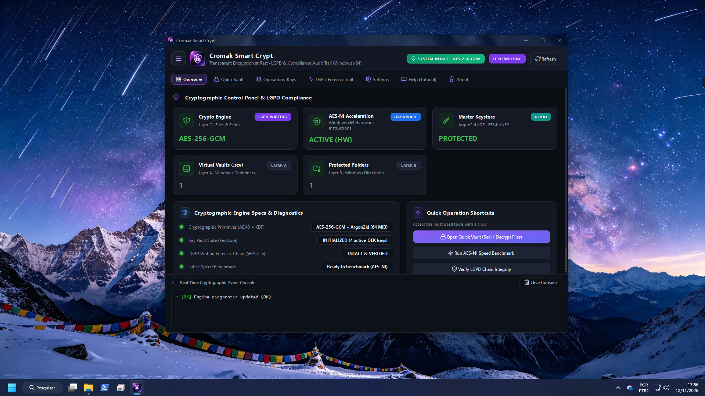
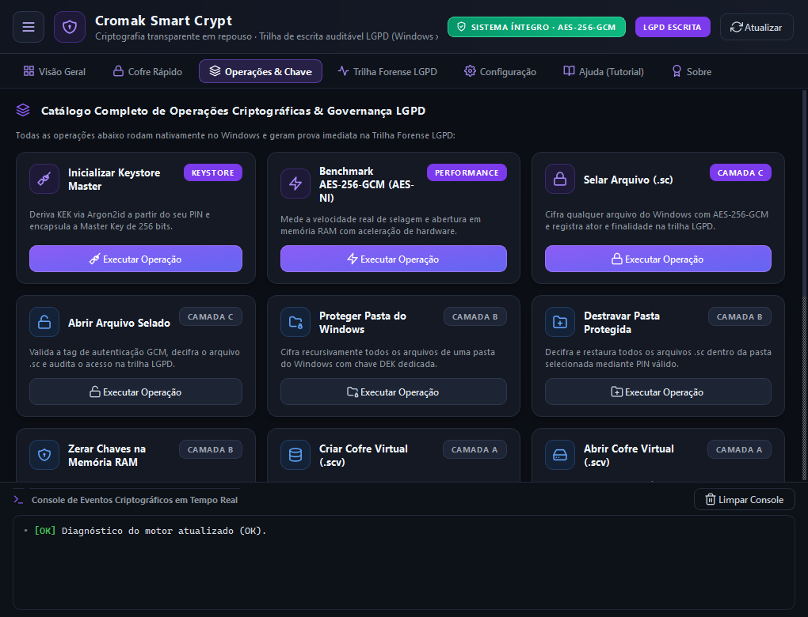
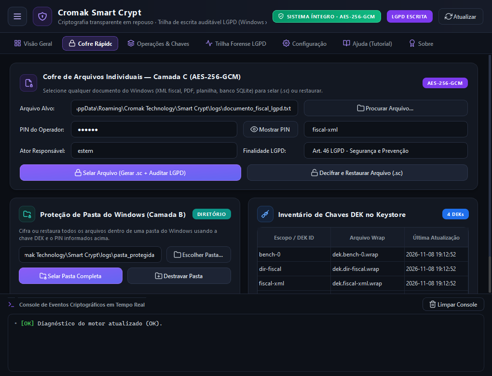
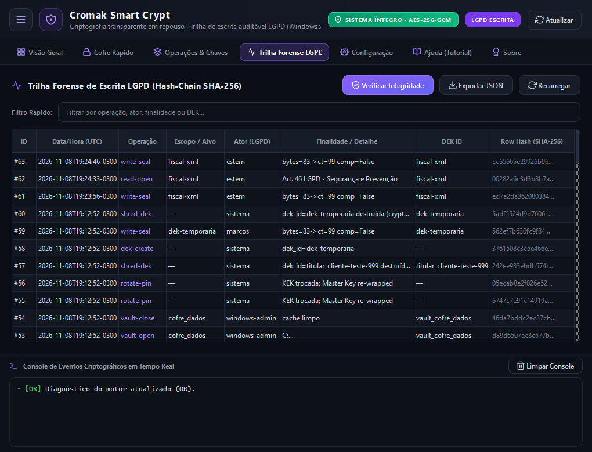
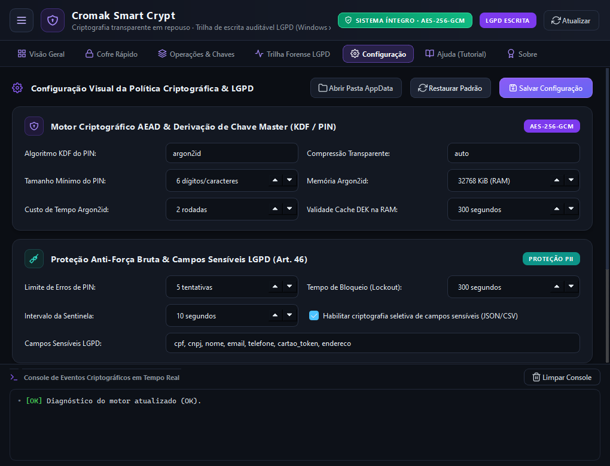
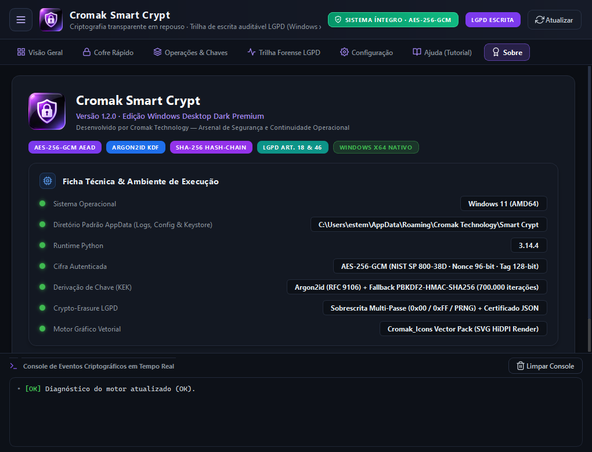

Cromak Smart Crypt
Transparent Encryption at Rest & Forensic Audit Trail.
Version: 1.0.0 (Build 2026.11)
Blindagem criptográfica de nível militar para documentos fiscais (XML/NFe), folhas de pagamento, bancos de dados locais e pastas críticas. Integra aceleração por hardware AES-NI e gera trilha forense imutável encadeada por SHA-256 para comprovação jurídica imediata perante a ANPD.

Data security without compromising team productivity.
Tradicionais softwares de criptografia criam containers pesados, corrompem arquivos com facilidade e não oferecem respaldo jurídico em caso de fiscalização. A LGPD exige muito mais do que cifrar dados: exige provar quem cifrou, quem abriu, quando e com qual finalidade legal.
O Cromak Smart Crypt opera na vanguarda da segurança da informação no Windows: arquitetura em 3 camadas (Cofres .scv, Pastas Blindadas e Selagem de Arquivos .sc), derivação KEK ultrarresistente com Argon2id, aceleração nativa AES-NI e total soberania de dados com zero telemetria externa.
The 4 Pillars of Our Cryptographic Architecture
-
Motor Criptográfico AEAD (AES-256-GCM)
Cifra autenticada com nonce de 96 bits e tag de validação de 128 bits. Detecta qualquer adulteração física no arquivo cifrado e utiliza instruções diretas de processador (AES-NI) para atingir velocidades de gigabytes por segundo.
-
Keystore Master & KEK via Argon2id
A Chave Mestra é derivada utilizando o algoritmo campeão da Password Hashing Competition: Argon2id (RFC 9106) com 64 MiB de consumo de memória física, neutralizando ataques de força bruta acelerados por GPUs e clusters na nuvem.
-
Arquitetura Modular em 3 Camadas
Camada A: Cofres Virtuais blindados (.scv). Camada B: Pastas inteiras do Windows protegidas com 1 clique. Camada C: Selagem de arquivos avulsos (.sc) com compressão inteligente pré-cifra.
-
Trilha Forense de Escrita LGPD (SHA-256)
Every seal or unseal operation writes an immutable entry into a cryptographic hash chain containing timestamp, operator identity, and digital signature.
Explore the Interface
Clique nas imagens para expandir e conhecer os painéis do sistema.

Dashboard & Telemetria Criptográfica
Comprehensive view of active AEAD cryptographic primitives, active Data Encryption Keys (DEKs), AES-NI hardware acceleration status, and mounted vaults.

Catálogo de Operações & Chaves
Execução em 1 clique para selar/abrir arquivos, blindar pastas inteiras, criar cofres .scv, rodar benchmarks e shredding de memória RAM.

Cofre Rápido (Quick Vault)
Assistente visual direto para cifrar e decifrar arquivos críticos do dia a dia com atribuição imediata de Ator e Finalidade LGPD.

Trilha Forense LGPD (Audit Trail)
Tabela de auditoria em tempo real com hashes SHA-256 encadeados, busca textual, filtro de eventos e exportação instantânea em JSON.

Configurações & Ajuste de Hardware
Controle do buffer de I/O em disco, seleção de algoritmos de KDF, políticas de tray e retenção de logs locais.

Ficha Técnica & Governança
Validação da chave de licença PRO, identificação do HWID da máquina e acesso direto à documentação, EULA e políticas de privacidade.
Choose the Ideal License for Your Business
Segurança desde profissionais liberais até redes com múltiplos postos de trabalho.
Free Plan
- Criptografia AES-256-GCM
- Selagem de Arquivos Avulsos (.sc)
- Benchmark de Velocidade AES-NI
- Cofres Virtuais (.scv) Bloqueados
- Proteção de Pastas Desativada
- Trilha Forense sem Exportação JSON
Personal PRO
- 1 Machine License (Lifetime)
- Cofres Virtuais (.scv) Ilimitados
- Proteção de Pastas Recursiva
- Trilha Forense LGPD Completa
- Zerar Chaves na Memory (RAM) (Zeroize)
- Exportação de Certificados JSON
Corporativo (B2B)
- Pacote p/ até 5 Estações de Trabalho
- Or $ 149.90 (Lifetime for 10 Machines)
- Laudo de Conformidade Técnica LGPD
- Políticas Centralizadas de DEK
- Priority Corporate B2B Support
- Ideal para Escritórios e Contabilidades
Multilingual Installers
O software detecta automaticamente o idioma do seu sistema operacional ou permite a troca instantânea na interface com tradução 100% nativa em 10 idiomas.
System Requirements
Operating System
Windows 10 / 11 (x64 Nativo)
Processador
x64 com suporte AES-NI (Intel Core ou AMD Ryzen)
Memory (RAM)
512 MB Livres (Consumo base ~65 MB)
Armazenamento
45 MB de espaço livre em disco
Privileges
Administrator (Requerido para proteção de pastas)
Idiomas Suportados
10 Idiomas Nativos
Português, English, Español, Français, Deutsch, Italiano, Русский, 简体中文, 日本語, 한국어Frequently Asked Questions
How does Cromak Smart Crypt fulfill GDPR and LGPD regulatory compliance?
Data protection regulations (such as GDPR Article 32 and LGPD Article 46) mandate technical security measures capable of shielding personal data from unauthorized access. Smart Crypt implements authenticated AES-256-GCM / XChaCha20-Poly1305 encryption alongside an append-only forensic audit trail with SHA-256 hash chaining — recording Actor, Legal Purpose, and Timestamp for every operation as verifiable technical diligence.
O que acontece se a máquina for roubada ou sofrer ataque de ransomware?
Sem o seu PIN Master (protegido por Argon2id com resistência física a ataques em GPUs), os arquivos selados e os cofres virtuais permanecem indecifráveis por qualquer método computacional existente. Além disso, os dados cifrados ficam isolados de invasores e de processos suspeitos.
Minhas chaves de criptografia são enviadas para algum servidor?
Absolutamente não. O software opera sob a filosofia de Soberania Absoluta e Zero Telemetria. Suas chaves KEK e DEK nunca saem do seu computador e permanecem cifradas no Keystore local em AppData do Windows. A Cromak Technology não possui acesso e nem custódia dos seus dados.